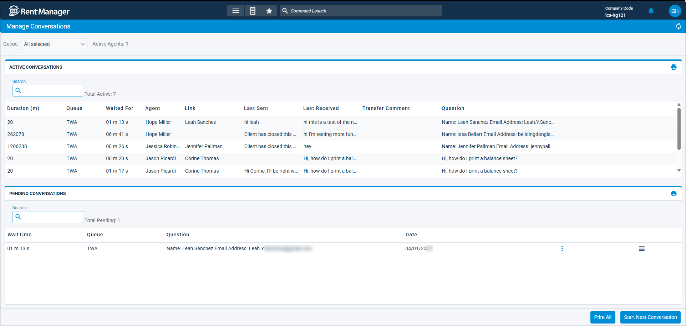

Source: https://rmxhelp.rentmanager.com/Topics/Express/CSH/Web-Chat-Manage-Conversations.htm
Manage Web Chat Conversations (Page)
Rent Manager's Web Chat feature allows you to place a chat button on your Tenant Web Access (TWA), Owner Web Access (OWA), and Web Template Suite sites, as well as custom websites. On the Manage Conversations page, you can review all web chats that have been received. Active and Pending conversations display in two sections. Active conversations are web chats that have been answered by a Rent Manager user, and pending conversations are web chats that are waiting to be answered.
You can reorder pending conversations to advance more urgent chats to the top of the list, and view the details of a conversation (such as a website visitor's responses to the questions asked upon beginning a chat) without actually taking on the chat.
More Information
This feature is licensed and must be purchased separately. For more information, contact your sales representative at sales@rentmanager.com.
Related Privileges
| Group | Privilege | Column |
|---|---|---|
| Web Chat | Queues | View, Edit |
Additionally, you must have the Admin column checked for your username on the Manage Queues page for each queue you manage.
For more information, refer to Control User Access and Manage Queues (Web Chat) (Page).
To manage Web Chat conversations, go to  arrow_forward Communication arrow_forward Web Chat arrow_forward Manage Conversations.
arrow_forward Communication arrow_forward Web Chat arrow_forward Manage Conversations.

Queue Information
The following information displays at the top of the Manage Conversations page.
| Field | Description |
|---|---|
|
Queue |
The queue(s) whose statistics are currently displayed across the top of the page and whose conversations display in the Active Conversations and Pending Conversations sections. |
|
Active Agents |
The number of users logged in to the selected queue(s). |
Active Conversations
In the Active Conversations section, web chats which have been answered display. The following columns display in this section.
| Column | Description |
|---|---|
|
Duration (m) |
The length of time the conversation took from when the agent answered the Web Chat request to when the chat was closed, measured in minutes. |
|
Queue |
The queue from which the conversation originated. |
|
Waited For |
The length of time the visitor waited for the Web Chat request to be answered by an agent, measured in minutes (m) and seconds (s). |
|
Agent |
The agent who answered the Web Chat request and spoke to the visitor during the conversation. If the chat was transferred, the name of the last agent to speak in the chat displays. |
|
Link |
The name of the account associated with the conversation. |
|
Last Sent |
The last message the agent sent to the visitor. |
|
Last Received |
The last message received from the visitor. |
|
Transfer Comment |
If the conversation was transferred, the message included on the transfer pop-up displays. |
|
Question |
The initial questions established for the queue and the answers provided by the visitor before they submit the chat. For more information, refer to Manage Queues (Web Chat) (Page). |
More Information
To view the details for a web chat conversation, click  arrow_forward Details. Details can only be viewed on conversations that have not been finished. To view the details of completed conversations, refer to Closed Conversations (Web Chat) (Page).
arrow_forward Details. Details can only be viewed on conversations that have not been finished. To view the details of completed conversations, refer to Closed Conversations (Web Chat) (Page).
Pending Conversations
In the Pending Conversations section, web chats which are waiting to be answered display. You can reorder the conversations in this section, and move the most urgent conversations to the top. Since agent users may only take the next conversation, this allows an admin to prioritize the order in which agents take chats.
The following columns display in this section. To answer a pending conversation, click  arrow_forward Start Conversation.
arrow_forward Start Conversation.
| Column | Description |
|---|---|
|
Wait Time |
The number of minutes (m) the visitor has been waiting for their chat to be answered by an agent. |
|
Que |
The queue in which the conversation is waiting. |
|
Question |
The question the visitor asked to start the chat with an agent, including the initial question fields for the queue and the visitor's answers. |
|
Date |
The date on which the chat was initiated. |